가스기사 (2004-03-07 기출문제)
1과목: 가스유체역학
1. 물이 평균속도 4.5m/s로 100mm 지름 관로에서 흐르고 있다. 이 관의 길이 20m에서 손실된 헤드를 실험적으로 측정하였더니 4.8m 이었다. 관의 마찰속도는?
- 0.20 m/s
- 0.24 m/s
- 0.26 m/s
- 0.28 m/s
(정답률: 알수없음)

2. 이상유체에 대한 정의로 가장 옳은 것은?
- 비압축성, 비점성인 유체
- 압축성, 비점성인 유체
- 비압축성, 점성인 유체
- 압축성, 점성인 유체
(정답률: 알수없음)
3. 비압축성 유체에 적용되는 관계식은? (단, Ａ:단면적, ｕ:유속, ρ :밀도, ｒ:비중량)
- r1A1u1 = r2A2u2
- ρ1A1u1 = ρ2A2u2
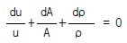
- A1u1= A2u2
(정답률: 43%)
4. 내경(d)이 25㎝, 길이(L)가 400m인 관에 평균속도(V) 1.32 ㎧로 물이 흐르고 있다. 관의 마찰계수(f)가 0.0422일 때, 손실수두(H)는?
- 4.8m
- 6m
- 7.6m
- 12m
(정답률: 알수없음)
5. 두 개의 평행평판 사이에 유체가 층류로 흐를 때 전단응력은?
- 중심에서 0 이고 전단응력의 분포는 포물선 형태를 갖는다.
- 단면 전체에 걸쳐 일정하다.
- 평판의 벽에서 0 이고 중심까지의 거리에 비례하여 증가한다.
- 중심에서 0 이고 중심에서 평판까지의 거리에 비례하여 증가한다.
(정답률: 알수없음)
6. 어떤 유체의 밀도가 138.63 [kgf· sec2/m4] 일 때 비중량은 몇 [kgf/m3] 인가?
- 1.381
- 140.8
- 1,359
- 13.55
(정답률: 알수없음)
7. 원추 확대관의 손실계수를 최대로 하는 각은?
- 손실계수는 확대각 θ에 무관하고 일정하다.
- θ = 20° 전후에서 최대 이다.
- θ = 60° 전후에서 최대 이다.
- θ = 90° 에서 최대 이다.
(정답률: 알수없음)
8. 유체는 분자들 간의 응집력으로 인하여 하나로 연결되어 있어서 연속물질로 취급하여 전체의 평균적 성질을 취급 하는 경우가 많다. 이와 같이 유체를 연속체로 취급할 수 있는 조건은? (단, ℓ 은 유동을 특정지어 주는 대표길이, λ 는 분자의 평균 자유행로 이다.)
- ℓ ≪ λ
- ℓ ≫ λ
- ℓ = λ
- ℓ 과 λ 는 무관하다.
(정답률: 77%)
9. 산소 100L 가 용기의 구멍을 통해 빠져나오는데 20분 걸렸다면, 같은 조건에서 이산화탄소 100L 가 빠져나오는데 걸리는 시간은?
- 23.5분
- 33.5분
- 43.5분
- 55.5분
(정답률: 알수없음)
10. 절대압력이 4 × 104Kgf/m2 이고, 온도가 15℃ 인 공기의 밀도는? (단, 공기의 기체상수는 29.27Kgf· m/Kg· K 이다.)
- 2.75Kg/m3
- 3.75Kg/m3
- 4.75Kg/m3
- 5.75Kg/m3
(정답률: 알수없음)
11. 경험적으로 낙하거리 s 는 물체의 질량 m, 낙하시간 t 및 중력가속도 g 와 관계가 있다. 차원해석을 통해 이들에 관한 관계식을 옳게 나타낸 것은?(단, k는 비례상수이다.)
- s = kgt
- s = kgt2
- s = kmgt
- s = kmgt2
(정답률: 20%)
12. 전단속도가 증가함에 따라 점도가 증가하는 유체는?
- 딕소트로픽(thixotropic) 유체
- 레오펙틱(rheopectic) 유체
- 빙햄플라스틱(Bingham plastic) 유체
- 뉴톤(Newtonians) 유체
(정답률: 42%)
13. 표면장력에 대한 관성력의 비를 나타내는 무차원의 수는?
- Reynolds수
- Froude수
- 모세관수
- Weber수
(정답률: 알수없음)
14. 확산기(diffuser)운전 시 고려해야 할 사항이 아닌 것은?
- 역압력 구배로 인한 강력한 박리 경향
- 효과적인 운전유지를 위한 조건변화 중 발생하는 충격파의 위치조절 곤란
- 시동곤란
- 연소계통의 조절
(정답률: 알수없음)
15. 왕복식 펌프의 운전형식에서 차동식의 형태를 바르게 설명한 것은?
- 피스톤이 1회 왕복할 때 1회 흡입하고 1회 배출
- 피스톤이 1회 왕복할 때 1회 흡입하고 2회 배출
- 피스톤이 1회 왕복할 때 2회 흡입하고 1회 배출
- 피스톤이 1회 왕복할 때 2회 흡입하고 2회 배출
(정답률: 알수없음)
16. 펌프의 서징(Surging)현상의 방지법이 아닌 것은?
- 배관 내 경사를 완만하게 해준다.
- 가이드 배인을 컨트롤하여 풍량을 증가시킨다.
- 교축밸브를 기계에 가까이 설치한다.
- 토출가스를 흡입측에 바이패스 시킨다.
(정답률: 알수없음)
17. 축류 압축기는 동익과 정익이 조합된 익렬을 가지고 있으며 동익은 로터에 박혀있다. 다음 중 에너지 증가구간에 속하는 것은?
- 흡입구
- 흡입구에서 익렬까지
- 익렬
- 익렬후방에서 송출구까지
(정답률: 19%)
18. 공기 중의 소리속도 C는
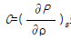
로 주어진다. 이 때 소리의 속도와 온도와의 관계는? (단, T는 주위의 절대온도이다.)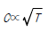
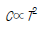
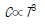
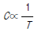
(정답률: 알수없음)
19. 완전기체에서 정적비열의 정의로 옳은 것은?
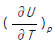
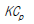
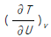
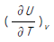
(정답률: 70%)
20. 완전 기체에서 정적비열(Cv), 정압비열(Cp) 의 관계식을 표시한 것은?(단, R은 기체상수이다.)
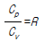
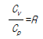
- Cp-Cv=R
- Cp+Cv=R
(정답률: 55%)
2과목: 연소공학
21. 연료가 완전 연소할 때 이론상 필요한 공기량을 Mo(m3) 실제로 사용한 공기량을 M(m3)라 하면 과잉공기 백분율로 올바르게 표시한 식은 ?
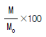
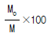
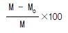
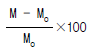
(정답률: 알수없음)
22. 무게 백분율로 탄소 84%, 수소 16%인 연료 100g이 연소하여 질소가스 50g mole을 생성하였다면 이때 공기비는?
- 1.21
- 1.50
- 1.74
- 1.88
(정답률: 알수없음)
23. 다음은 가연성 기체의 최소발화에너지에 대한 설명이다. 이중 맞는 것은?
- 가연성기체의 온도가 높아질수록 최소발화 에너지는 높아진다.
- 가연성기체의 연소속도가 느릴수록 최소발화에너지는 낮아진다.
- 가연성 기체의 열전도율이 적을수록 최소발화에너지는 낮아진다.
- 가연성 기체의 압력이 낮을수록 최소발화에너지는 낮아진다.
(정답률: 55%)
24. 액체상태의 프로판이 이론 공기연료비로 연소하고 있을 때 저발열량은 몇 kJ/kg 인가?(단, 이 때 온도는 25℃이고, 이 연료의 증발엔탈피는 360kJ/kg이다. 또한 기체상태의 C3H8의 형성엔탈피는 -103909kJ/kmol, CO2의 형성엔탈피는 -393757kJ/kmol, 기체상태의 H2O의 형성엔탈피는 -241971kJ/kmol 이다.)
- 23501
- 46017
- 50002
- 2149155
(정답률: 알수없음)
25. 50℃, 30℃, 15℃인 3종류의 액체 A,B,C가 있다. A와 B를 같은 질량으로 혼합하였더니 40℃가 되었고, A와 C를 같은 질량으로 혼합하였더니 20℃가 되었다고 하면 B와 C를 같은 질량으로 혼합하면 온도는 약 몇 ℃가 되겠는가?
- 17.1
- 19.5
- 20.5
- 21.1
(정답률: 알수없음)
26. NH4 가스 누출시험에 사용할 수 없는 것은?
- 헬라이도 토오치
- 염화수소
- 리트머스 시험지
- 네슬러 용액
(정답률: 알수없음)
27. 다음은 카르노(Carnot)사이클의 순환과정을 표시한 그림이다. 이상기체가 이 과정의 매체일 때 효율을 올바르게 표현한 것은?
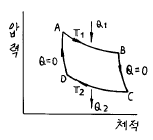
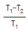
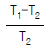
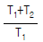
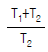
(정답률: 37%)
28. 다음 과정 중 가역 단열 과정인 것은?
- 정온과정
- 정적과정
- 등엔탈피과정
- 등엔트로피과정
(정답률: 62%)
29. 수소 10g의 연료가 공기중에서 완전반응에 의하여 발생하는 이론건조가스량은 표준상태하에서 몇 m3 인가?(단, 공기의 부피 조성비는 산소:질소=21:79 이다.)
- 0.211
- 0.267
- 0.323
- 0.421
(정답률: 알수없음)
30. 연소부하율은 작지만 화염의 안정범위가 넓고 조작이 용이하며 역화의 위험이 없는 연소형태는?
- 확산연소
- 분해연소
- 분무연소
- 예혼합연소
(정답률: 65%)
31. 일정부피의 밀폐된 탱크에 있는 공기가 20℃, 5㎏/㎝2의 상태에서 온도 30℃로 상승했을 때 압력의 상승은 얼마인가?
- 0.17㎏/㎝2
- 1.17㎏/㎝2
- 2.17㎏/㎝2
- 3.17㎏/㎝2
(정답률: 알수없음)
32. 다음 내용중에서 열역학 식으로 올바른 것은?
- 정압비열 Cp = Cv - R
- 2원자 분자가스의 단열지수 r=1.33
- 엔탈피 H = U + nRT
- 이상기체의 단열 압축때 온도상승
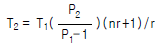
(정답률: 알수없음)
33. 100kPa, 20℃ 상태인 배기가스 0.3m3 을 분석한 결과 N2=70%, CO2=15%, O2=11%, CO=4%의 체적률을 얻었을 때 이 혼합물을 150℃인 상태로 정적가열 할 때 필요한 열전달량은 몇 kJ 인가?(단, N2, CO2, O2, CO의 정적비열(kJ/kgㆍK)은 각각 0.7448,0.6529,0.6618,0.7445 이다.)
- 35.32
- 37.33
- 39.53
- 41.33
(정답률: 17%)
34. 다음은 엔탈피와 내부 에너지의 관계식이다. 압력을 일정하게 유지하였을 때 엔탈피의 변화량을 바르게 표시한 것은?
- dH = dU + PdV
- dH = dU + PdV + VdP
- dH = dU - PdV
- dH = dU - PdV - VdP
(정답률: 알수없음)
35. 10㎏/㎝2, 0.1m3의 이상기체를 초기 부피의 5배로 등온팽창 시킬 때 소요열량(㎉)은?
- 26.7
- 37.6
- 43.4
- 53.7
(정답률: 알수없음)
36. 냉동실을 -10℃로 유지하고 사용하는 찬물은 10℃이다. 프레온-12를 사용하는 냉동실 코일과 응축기는 크기가 충분하여 각각 -10℃로 근접시킬수 있다고 가정할때 Carnot 사이클에 대한 냉동기의 성능계수(COP)는 얼마인가?
- 10.25
- 13.15
- 16.45
- 18.75
(정답률: 알수없음)
37. 다음 중 액체 연료의 연소 형태가 아닌 것은?
- 등심 연소(wick burning)
- 증발 연소(vaporizing combustion)
- 분무 연소(spray combustion)
- 확산 연소(dirrusive burning)
(정답률: 77%)
38. 다음은 층류예혼합화염의 구조도이다. 온도곡선의 변곡점인 Ti를 무엇이라 하는가 ?
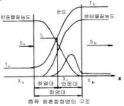
- 착화온도
- 반전온도
- 화염평균온도
- 예혼합화염온도
(정답률: 알수없음)
39. 1몰의 메탄에 20% 과잉공기를 공급하여 완전 연소할 때 얻어지는 연소 기체중의 산소의 몰수는?
- 0.2
- 0.4
- 0.8
- 1.0
(정답률: 46%)
40. 다음 설명 중 옳은 것은?
- N2를 가연성가스에 혼합하면 연소한계는 넓어진다.
- CO2를 가연성가스에 혼합하면 연소한계가 넓어진다.
- 가연성가스는 온도가 일정하고 압력이 내려가면 연소 한계가 넓어진다.
- 가연성가스는 온도가 일정하고 압력이 올라가면 연소 한계가 넓어진다.
(정답률: 알수없음)
3과목: 가스설비
41. 펌프를 운전할 때 펌프내에 액이 충만하지 않으면 공회전 하여 펌프작업이 이루어 지지 않는다. 이러한 현상을 방지하기 위하여 펌프내에 액을 충만시키는 것을 무엇이라 하는가?
- 베이퍼룩
- 프라이밍
- 캐비테이션
- 서징
(정답률: 70%)
42. 다음 중 가연성이면서 독성인 가스로 구성된 것은?
- 염소, 시안화수소
- 산화 질소, 수소
- 오존, 아세틸렌
- 일산화탄소, 암모니아
(정답률: 46%)
43. 도시가스 제조에서 부분 연소법의 원리를 바르게 설명한 것은?
- 메탄에서 원유까지의 탄화수소를 원료로 하여 산소 또는 공기 및 수증기를 이용하여 메탄, 수소, 일산화탄소, 이산화탄소로 변환시키는 방법이다.
- 메탄을 원료로 사용하는 방법으로 산소 또는 공기 및 수증기를 이용하여 수소, 일산화탄소 만을 제조하는 방법이다.
- 에탄만을 원료로하여 산소 또는 공기 및 수증기를 이용하여 메탄만 생성시키는 방법이다.
- 코오크스 만을 사용하여 산소 또는 공기 및 수증기를 이용하여 수소와 일산화탄소 만을 제조하는 방법이다
(정답률: 37%)
44. 다음 부취제에 대한 설명중 옳지 않은 것은?
- D.M.S 는 토양투과성이 아주 우수하다.
- T.B.M 은 충격(impact)이 가장 약하다.
- T.B.M 은 메르캅탄류 중에서 내산화성이 우수하다.
- T.H.T 의 LD50은 6400mg/kg 정도로 거의 무해하다.
(정답률: 알수없음)
45. 역 카르노 사이클로 작동되는 냉동기가 20마력의 일을 받아서 저온체로 30[㎉/s]의 열을 흡수한다면 고온체로 방출하는 열량[㎉/s]은?
- 33.5 [㎉/s]
- 30.5 [㎉/s]
- 42.6 [㎉/s]
- 55.4 [㎉/s]
(정답률: 알수없음)
46. 방폭전기기기의 구조별 표시방법과 기호 표시로 옳은 것은?
- 내압방폭 구조 - d
- 유입방폭 구조 - p
- 압력방폭 구조 - e
- 안전증방폭 구조 - o
(정답률: 알수없음)
47. 고압가스 제조 장치의 재료에 대한 설명으로 옳지 않은 것은?
- 상온건조 상태의 염소가스에 대하여는 보통강을 사용해도 된다.
- 암모니아, 아세틸렌의 배관 재료에는 구리재를 사용해도 된다.
- 고압의 이산화탄소 세정장치 등에는 내산강을 사용하는 것이 좋다.
- 암모니아 합성탑 내통의 재료에는 18 - 8스테인레스 강을 사용한다.
(정답률: 64%)
48. 내용적이 45ℓ 인 액화가스 용기에 액화가스를 상온에서 최대로 충전할 때의 용적율[%]은? (단, 상온에서 액화가스의 밀도는 0.9kg/ℓ 이고, 충전상수는 2.5 이다.)(오류 신고가 접수된 문제입니다. 반드시 정답과 해설을 확인하시기 바랍니다.)
- 약 40.0%
- 약 44.4%
- 약 55.6%
- 약 60.0%
(정답률: 알수없음)
49. 펌프가 정상운전할 수 있는 유효흡입양정(NPSH)조건으로 옳지 않은 것은?
- 펌프를 낮은 곳에 설치한다.
- 흡입관 내면의 마찰저항을 적게 한다.
- 흡입배관을 짧게 한다.
- 흡입관경을 작게 한다.
(정답률: 30%)
50. 펌프의 송출유량이: Q m3/min, 양정이: H m, 취급하는 액체의 비중량이: r ㎏/m3 일 때 펌프의 수동력 Lw[㎾]을 구하는 식은?
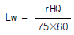
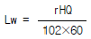
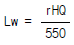
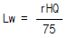
(정답률: 알수없음)
51. LP가스 집합공급설비의 자동절체식 일체형조정기를 사용하는 경우 안전밸브의 표준 작동 압력은?
- 700mmH2O
- 800mmH2O
- 600mmH2O
- 900mmH2O
(정답률: 19%)
52. LPG를 이용한 도시가스 공급방식이 아닌 것은?
- 변성 혼입 방식
- 공기 혼합 방식
- 직접 혼입 방식
- 가압 혼입 방식
(정답률: 17%)
53. 도시가스 배관의 공사 시 기울기는 도로의 기울기를 따르는데, 도로가 평탄한 경우의 경사도는?
- 1/100
- 1/200 ~ 1/300
- 1/400
- 1/500 ~ 1/1000
(정답률: 알수없음)
54. 고압가스 제조시설에 설치하는 내부반응 감시장치에 속하지 않는 것은?
- 온도감시장치
- 압력감시장치
- 유량감시장치
- 기화감시장치
(정답률: 64%)
55. 불꽃의 주위, 특히 불꽃의 기저부에 대한 공기의 움직임이 세어지면 불꽃이 노즐에 정착하지 않고 떨어지게 되어 꺼져버리는 현상은?
- 블로우 오프(blow-off)
- 백-파이어 (back-fire)
- 리프트(lift)
- 불완전 연소
(정답률: 알수없음)
56. 1호당 1일 평균 가스 소비량이 1.44[㎏/day]이고 소비자 호수가 50호 라면 피크시의 평균 가스 소비량은? (단, 피크 시의 평균 가스 소비율은 17[%]임)
- 12.24[㎏/hr]
- 10.18[㎏/hr]
- 14.36[㎏/hr]
- 13.42[㎏/hr]
(정답률: 알수없음)
57. 펌프의 실제송출 유량을 Q 라 하고, 회전차 속을 지나는 유량을 Q + Δ Q 라 할 때 펌프의 체적효율은?
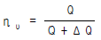
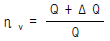
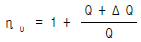
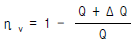
(정답률: 알수없음)
58. 가스 연소시 역화(Flash back)발생의 원인이 아닌 것은?
- 부식에 의한 염공이 크게 되었을 때
- 가스의 압력이 저하된 경우
- 콕크가 충분하게 열리지 않는 경우
- 노즐의 직경이 너무 작게 된 경우
(정답률: 알수없음)
59. 가스액화 분리 장치의 기본 구성요소가 아닌 것은?
- 한냉 발생장치
- 정류장치
- 불순물 제거장치
- 액체증발장치
(정답률: 31%)
60. 2단 감압방식 조정기의 특징에 대한 설명으로 옳지 않은 것은?
- 장치가 복잡하고 조작이 어렵다.
- 재액화에 문제가 따른다.
- 공급 압력이 안정하다.
- 배관의 지름이 비교적 크다.
(정답률: 8%)
4과목: 가스안전관리
61. P:15(㎏/㎝2), D:300(㎜), S:40(㎏/㎜2), E:0.85 일 때 프로판 용기의 두께는? (단, 부식여유 수치는 가산하지 않는 두께)
- 2.38㎜
- 2.67㎜
- 2.85㎜
- 3.18㎜
(정답률: 알수없음)
62. 암모니아를 사용하는 A 공장에서 저장능력 25톤의 저장탱크를 지상에 설치하고자할 때 저장설비 외면으로부터 사업소외의 주택까지 안전거리는 얼마 이상을 유지하여야 하는가? (단, A 공장의 지역은 전용공업지역 아님)
- 18m
- 21m
- 16m
- 14m
(정답률: 알수없음)
63. 차량에 고정 설치된 탱크에 관한 설명으로 옳지 않은 것은?
- 조작상자와 차량의 뒷범퍼와의 수평거리는 20㎝ 이상 이격한다.
- 2개 이상의 탱크를 동일 차량에 적재하는 경우 탱크마다 주밸브를 설치한다.
- 후부 취출식 탱크 외의 탱크는 후면과 차량의 뒷범퍼와의 거리를 20㎝ 이상 이격한다.
- 탱크 주밸브 및 긴급차단장치에 속한 밸브와 차량의 뒷범퍼와의 거리는 40㎝ 이상 이격한다.
(정답률: 50%)
64. 아세틸렌에 대한 설명으로 옳지 않은 것은?
- 무색, 무취의 가스이다.
- 흡열화합물이므로 압축하면 분해 폭발할 수 있다.
- 동, 은, 수은 등의 금속과 화합 시 아세틸라이드를 형성한다.
- 충전 시 분해폭발을 방지하기 위하여 메틸알콜을 침윤시킨다.
(정답률: 9%)
65. 니켈(Ni) 금속을 포함하고 있는 촉매를 사용하는 공정에 발생할 수 있는 맹독성 가스는?
- 산화니켈(NiO)
- 니켈카보닐[Ni(CO)4]
- 니켈 클로라이드(NiCl2)
- 니켈염
(정답률: 77%)
66. 가스용품 제조사업의 기술기준 중 염화비닐호스에 대한 설명으로 옳은 것은?
- 호스의 안지름은 6.3mm(1종)로 하고 허용오차는 ± 0.7mm로 할 것
- 호스의 구조는 안층, 바깥층으로 되어 있고 안지름과 두께가 균일할 것.
- 0.5MPa 이하의 압력에서 실시하는 기밀시험에서 누출이 없을 것.
- 5MPa 이상의 압력에서 파열되지 않을 것.
(정답률: 67%)
67. 다음과 같은 특징을 가진 전기방식법은?
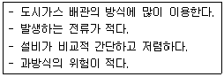
- 희생양극법
- 외부전원법
- 선택배류법
- 강제배류법
(정답률: 알수없음)
68. 압축천연가스 자동차 용기에 천연가스를 충전하는 시설에 대한 설명으로 옳지 않은 것은?
- 충전설비는 그 외면으로부터 사업소 경계까지 10m 이상의 안전거리를 유지하여야 한다.
- 압축가스설비의 모든 배관 부속품 주위에는 안전한 작업을 위하여 1m 이상의 공간을 확보하여야 한다.
- 충전설비는 인화성물질이나 가연성물질 저장소로부터 8m 이상의 거리를 유지하여야 한다.
- 충전설비는 도로법에 의한 도로경계로부터 3m 이상 유지하여야 한다.
(정답률: 20%)
69. 다음 중 1종 보호시설이 아닌 것은?
- 주택
- 수용능력 300인 이상의 극장
- 국보 제1호인 남대문
- 호텔
(정답률: 72%)
70. 액화석유가스용 차량에 고정된 저장탱크의 외벽이 화염에 의하여 국부적으로 가열될 경우를 대비하여 폭발방지장치를 한다. 재료로 사용되는 금속은?
- 아연
- 알루미늄
- 주철
- 스테인레스
(정답률: 알수없음)
71. 특정고압가스 사용신고 대상이 아닌 것은?
- 포스핀
- 셀렌화수소
- 에틸렌
- 디실란
(정답률: 34%)
72. 공기액화 분리장치에 취입되는 원료 공기 중 불순물이 아닌 것은?
- 아세틸렌
- 에틸렌
- 수소
- 질소
(정답률: 알수없음)
73. 차량에 고정된 탱크를 운행할 때의 주의사항으로 옳지 않은 것은?
- 차를 수리할 때에는 반드시 사람의 통행이 없고 밀폐된 장소에서 한다.
- 운행 중은 물론 정차시에도 허용된 장소 이외에서는 담배를 피우거나 화기를 사용하지 않는다.
- 운행 시 도로교통법을 준수하고 번화가를 피하여 운행한다.
- 화기를 사용하는 수리는 가스를 완전히 빼고 질소나 불활성가스로 치환한 후 실시한다.
(정답률: 알수없음)
74. LPG 사용시설 중 배관의 설치 방법으로 옳지 않은 것은?
- 건축물의 기초밑 또는 환기가 잘되는 곳에 설치할 것
- 건축물 내의 배관은 단독 피트내에 설치하거나 노출하여 설치할 것
- 지하매몰 배관은 적색 또는 황색으로 표시할 것
- 배관이음부와 전기계량기와의 거리는 60cm 이상 거리를 유지할 것
(정답률: 46%)
75. 마운드형 저장탱크의 설치기준에 대한 설명으로 옳은 것은?
- 높이 50cm 이상 견고하게 다져진 모래기반 위에 설치하여야 한다.
- 저장탱크의 모래기반 주위에는 지하수 침입 등으로 인한 붕괴의 위험이 없도록 30cm 이상의 철근콘크리트 옹벽을 설치하여야 한다.
- 저장탱크는 그 주위에 20cm 이상 모래를 덮은 후 1m 이상 흙으로 채워야 한다.
- 저장탱크에 설치한 안전밸브에는 저장탱크를 덮은 흙의 정상부에서 1m 이상 높이에 방출구가 있는 방출관을 설치하여야 한다.
(정답률: 알수없음)
76. 공기나 산소 등이 없어도 압력이 상승하거나 온도가 높아지면 폭발하는 성질을 가지는 가스가 아닌 것은?
- O3
- F2
- NO
- C2H4O
(정답률: 알수없음)
77. 액화석유가스 저장탱크를 지상에 설치하는 경우 저장능력이 몇 톤 이상일 때 방류둑을 설치해야 하는가?
- 1000 톤
- 1200 톤
- 1500 톤
- 2000 톤
(정답률: 알수없음)
78. 대기압 35℃ 에서 산소가스 20m3 를 50ℓ 의 용기에 150 기압으로 충전하고자 할 때 필요한 용기 수는?
- 2개
- 3개
- 4개
- 5개
(정답률: 70%)
79. 고압가스 시설에서 가연성물질을 취급하는 설비의 주위라 함은 그 외면으로부터 어떤 범위의 거리를 말하는가?
- 10m 이내
- 20m 이내
- 15m 이내
- 30m 이내
(정답률: 20%)
80. 부취제 주입 방식 중 전원이 필요하지 않고, 온도, 압력 등의 변동에 따라 부취제 첨가율이 변동하는 방식은?
- 적하주입방식
- 펌프주입방식
- 바이패스증발방식
- 미터연결바이패스방식
(정답률: 40%)
5과목: 가스계측기기
81. 액화산소 등을 저장하는 초저온 저장탱크의 액면 측정용으로 가장 적합한 액면계는?
- 직관식
- 부자식
- 차압식
- 기포식
(정답률: 알수없음)
82. 가스미터의 주요 고장 원인으로 거리가 먼 것은?
- 역방향으로 유체를 흘린 경우
- 지정된 압력 이상의 유체를 흘린 경우
- 유체종류에 따라 유량계의 재질 선정이 잘못된 경우
- 점도 차이가 큰 기체를 사용했을 경우
(정답률: 알수없음)
83. 침종식 압력계에 대한 설명으로 옳지 않은 것은?
- 복종식의 측정범위는 5~30mmH2O이다.
- 아르키메데스의 원리를 이용한 계기이다.
- 진동 충격의 영향을 적게 받는다.
- 압력이 높은 기체의 압력을 측정하는데 쓰인다.
(정답률: 24%)
84. 내경이 100㎜인 배관에 구경:50㎜인 orifice가 설치되어 있는 관로를 상온의 질소기체가 일정한 속도로 흐르고 있다. orifice 전후의 압력차가 0.3㎏f/㎝2 이었을 때 시간당 흐르는 유량(m3/h)은? (단, 질소기체의 단위체적당 중량은:1.2㎏f/m3, 유량계수는 0.62 이며, 비압축성 기체로, 유량계산식을 사용함)
- 450 m3/h
- 650 m3/h
- 850 m3/h
- 970 m3/h
(정답률: 알수없음)
85. 다음 중 되먹임제어의 특성이 아닌 것은?
- 외부조건의 변화에 영향을 줄일 수 있다.
- 제어기 부품들의 성능이 다소 나빠지면 큰 영향을 받는다.
- 제어계의 특성을 향상시킬 수 있다.
- 목표값에 정확히 도달할 수 있다.
(정답률: 알수없음)
86. U자관 마노미터를 사용하여 오리피스에 걸리는 압력차를 측정하였다. 마노미터 속의 유체는 비중 13.6 인 수은이며 오리피스를 통하여 흐르는 유체는 비중이 1 인 물이다 마노미터의 읽음이 40㎝ 일 때 오리피스에 걸리는 압력차는?
- 0.50 ㎏f/㎝2
- 0.⑤ ㎏f/㎝2
- 0.30 ㎏f/㎝2
- 1.86 ㎏f/㎝2
(정답률: 37%)
87. 노즐-플래퍼(Nozzle-Flapper)를 이용한 공기식조절기의 역할은?
- 공기압신호를 전기신호로 변환하는 기기
- 전기신호를 공기압신호로 변환하는 기기
- 변위를 공기압신호로 변환하는 기기
- 공기압신호를 변위로 변환하는 기기
(정답률: 28%)
88. 습식가스미터에 대한 설명으로 옳지 않은 것은?
- 계량이 정확하다.
- 수위조정 등 관리가 필요하다.
- 일반 가정용이다.
- 설치공간이 크다.
(정답률: 62%)
89. 차압식 유량계가 아닌 것은?
- 오리피스
- 벤튜리미터
- 플로노즐
- 피스톤식
(정답률: 58%)
90. 탄광내에서 CH4가스의 발생을 검출하는데 적당한 방법은?
- 질량분석법
- 안전등형
- 시험지법
- 검지관법
(정답률: 80%)
91. 가스크로마토그래피에서 운반가스의 구비조건으로 옳지 않은 것은?
- 시료와 반응성이 낮은 불활성 기체여야 한다.
- 기체확산이 가능한 큰 것이어야 한다.
- 순도가 높고 구입이 용이해야 한다.
- 사용하는 검출기에 적합해야 한다.
(정답률: 80%)
92. 캐리어가스와 시료성분가스의 열전도도차를 금속필라멘트 또는 더미스터의 저항변화로 검출하는 가스크로마토그래피 검출기는?
- TCD
- FID
- ECD
- FPD
(정답률: 46%)
93. 도시가스용 가스계량기의 설치기준으로 옳지 않은 것은?
- 가스계량기는 화기(자체화기 제외)와 2m 이상의 우회거리를 유지하는 곳에 설치하여야 한다.
- 가스계량기는 수시로 환기가 가능한 장소에 설치하여야 한다.
- 직사광선 또는 빗물을 받을 우려가 있는 곳에는 가스 계량기를 설치할 수 없다.
- 가스계량기를 격납상자 내에 설치하는 경우에는 설치 높이의 제한을 하지 아니 한다.
(정답률: 알수없음)
94. 조절기의 출력이 제어편차의 시간적분에 비례하는 제어동작은?
- P 동작
- D 동작
- I 동작
- PID 동작
(정답률: 20%)
95. 압력계측기 중 직접 압력을 측정하는 1차 압력계에 속하는 것은?
- 액주계 압력계
- 부르돈관 압력계
- 벨로우즈 압력계
- 전기저항 압력계
(정답률: 알수없음)
96. 그림과 같은 U자관 수은주 압력계의 경우 액주의 높이차(h)는? (단, P1과 P2간의 압력차:0.68kgf/cm2 이고, 수은의 비중은 13.6 라고 가정한다.)
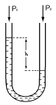
- 50 mm
- 25 mm
- 500mm
- 250 mm
(정답률: 알수없음)
97. 내경 10㎝ 인 관속으로 유체가 흐를 때 피토관의 마노미터 수주가 40㎝ 이었다면 이 때의 유량(m3/s)은?
- 2.199 × 10-2
- 2.199 × 10-1
- 2.199
- 2.199 × 10-3
(정답률: 50%)
98. 탄화수소에 대한 감도는 좋으나 O2, H2, CO 에 대하여는 감도가 전혀 없는 검출기는?
- 수소이온화 검출기(FID)
- 열 전도형 검출기(TCD)
- 전자포획 이온화 검출기(ECD)
- 염광광도 검출기(FPD)
(정답률: 73%)
99. 전열기에 의해 자동으로 물을 끓인다면 이 제어는 어떤 제어를 응용한 것인가?
- 시퀀스제어
- 공정제어
- 서보제어
- 피드백제어
(정답률: 알수없음)
100. 기차가 4%인 루트가스미터로 측정한 유량이 30.4[m3/h]였다면, 기준기로 측정한 유량은?
- 29.8[m3/h]
- 30.6[m3/h]
- 31.7[m3/h]
- 32.4[m3/h]
(정답률: 54%)
또한, 물의 평균속도가 4.5m/s 이므로, 유량은 다음과 같다.
유량 = π × 반지름^2 × 물의 평균속도
= 3.14 × 0.⑤^2 × 4.5
= 0.035 m^3/s
손실된 헤드는 4.8m 이므로, 다음과 같은 베르누이 방정식을 이용하여 마찰속도를 구할 수 있다.
손실된 헤드 = 마찰속도^2 / (2 × 중력가속도)
4.8 = 마찰속도^2 / (2 × 9.81)
마찰속도^2 = 4.8 × 2 × 9.81
마찰속도 = 3.43 m/s
하지만, 이는 전체 손실된 헤드를 나타내는 값이므로, 20m 길이 중에서 손실된 헤드를 구해야 한다.
손실된 헤드의 길이는 다음과 같다.
손실된 헤드의 길이 = 손실된 헤드 / (물의 밀도 × 중력가속도)
손실된 헤드의 길이 = 4.8 / (1000 × 9.81)
= 0.00049 m/m
따라서, 20m 길이 중에서 손실된 헤드의 총 길이는 다음과 같다.
손실된 헤드의 총 길이 = 20 × 0.00049
= 0.0098 m
이를 이용하여, 20m 길이 중에서 실제로 흐르는 물의 속도를 구할 수 있다.
실제로 흐르는 물의 속도 = 물의 평균속도 - (손실된 헤드의 총 길이 / 20)
실제로 흐르는 물의 속도 = 4.5 - (0.0098 / 20)
= 4.449 m/s
마지막으로, 이를 이용하여 마찰속도를 구할 수 있다.
마찰속도 = 물의 평균속도 - 실제로 흐르는 물의 속도
= 4.5 - 4.449
= 0.⑤1 m/s
따라서, 보기에서 정답이 "0.24 m/s" 인 이유는, 마찰속도를 반올림하여 소수점 둘째자리까지 표기한 값이기 때문이다.